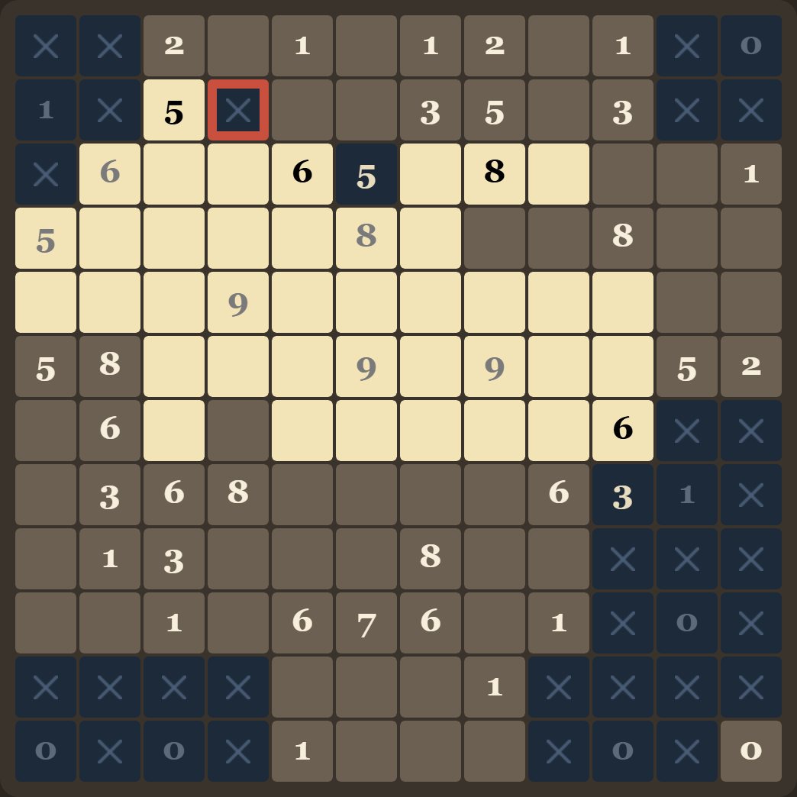
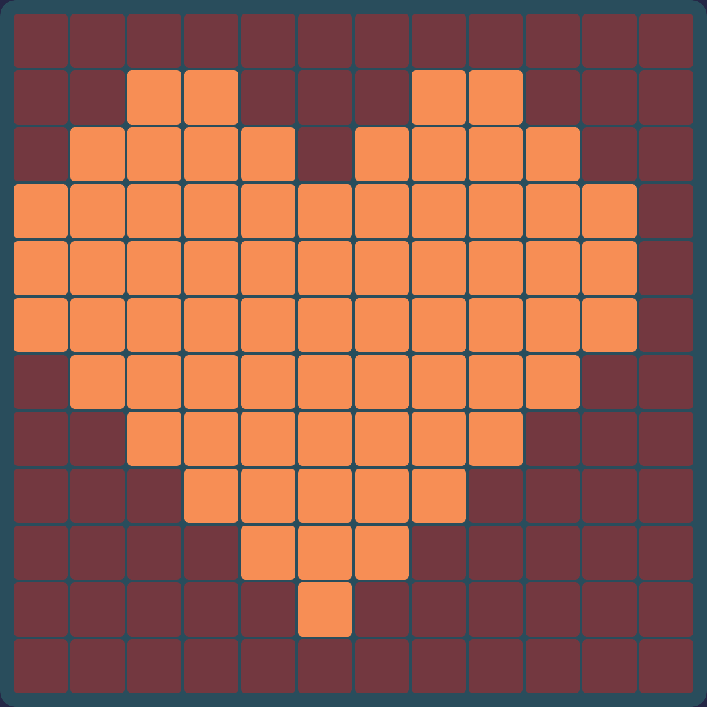

Picrossweeper is picross crossed with minesweeper. Every tile on the board is secretly either light or dark. Some tiles carry a number telling you how many light tiles are nearby. Work out the colour of every tile and the hidden picture appears.

1The one rule
A number counts the light tiles in the 3×3 block around it — and the numbered tile counts itself. That is the whole game.
So a numbered tile is not a special kind of tile. It is an ordinary tile that happens to tell you something, and you still have to colour it in like any other.
2Every number, 0 to 9
Here is one valid arrangement for each number. In each diagram the clue sits in the middle, and the count includes it. Notice that a number is not always light — the 0, the 1 and the 5 below are sitting on dark tiles, and any of the others could be too.
Why 9 only ever appears in the middle of the board
A tile at the edge of the grid has no neighbours outside it, so its block is smaller: an edge tile sees 6 tiles and a corner tile sees only 4. The largest number possible therefore depends on where the clue sits — a corner clue can never be higher than 4.
3Marking tiles
| To do this | Mouse | Touch |
|---|---|---|
| Mark a tile light | Left-click (hold and drag to paint several) | Tap. The Tap: ☀ light button chooses which colour a tap paints — press it to switch to dark. |
| Mark a tile dark | Right-click (hold and drag to paint several) | |
| Back to unknown | Click again with the same button | |
Dark tiles are drawn with an ✕ so you can tell "I decided this is dark" from "I haven't looked at this yet". Marking dark matters as much as marking light: it is what lets the next clue narrow down.

Numbers go grey when they are finished
Once every tile in a clue's 3×3 block has been marked — light or dark, it doesn't matter which — the number fades to grey. The tile keeps its colour; only the digit changes. That is your "nothing left to read here" signal, so you can skim past it and look for clues that still have unknowns around them.
The grey means "you have answered this clue", not "you answered it correctly". A wrong block goes grey too.
4How to actually solve it
Every puzzle is generated so it can be solved by pure logic — you never have to guess. Two moves will carry you through almost all of it.
Move 1 · The clue is already decided
Look at one clue and count what you know. If the lights it still needs equals the number of unknown tiles left in its block, all of them are light. If it needs none, all of them are dark.
The two extreme cases are the same move seen from each end: a 0 paints its whole block dark immediately, and a 9 paints its whole block light.
Move 2 · Compare two clues that overlap
When two clues sit side by side, most of their blocks are the same tiles. Whatever the shared part contributes, it contributes to both — so the difference between the two numbers has to come from the tiles only one of them can see.
The 6 sees the three left-hand columns; the 3 sees the three right-hand columns. They share the two columns in the middle, which contribute the same amount to both. The 6 is exactly 3 more than the 3, and the only tiles the 6 has that the 3 doesn't are the 3 tiles in the far-left column — so all three must be light. That accounts for the whole difference, which leaves the far-right column, seen only by the 3, contributing nothing: all dark.
Nothing else is needed. When you get stuck, it is almost always because there is a pair of overlapping clues you haven't compared yet.
5If you get stuck or slip up
| Button | What it does |
|---|---|
| Check | Outlines every tile you have marked in the wrong colour, in red. It doesn't tell you what the right answer is. |
| Hint | Fills in one tile that is deducible right now, and flashes it so you can see which clue gave it away. |
| Undo | Steps back one mark at a time (Ctrl+Z). |
| Clear | Wipes your marks but keeps the same puzzle. |
| New puzzle | Generates a fresh one (N). |

6Finishing
Mark every tile correctly and the board locks, the clue digits fade away, and the picture is left standing on its own.


7Setting up a puzzle you'll enjoy
| Setting | What to know |
|---|---|
| Picture | The hidden image. Random generates an organic blob instead of pixel art — it usually produces the most varied, least repetitive clues. |
| Size | 10×10 up to 25×25. Start at 10×10 or 12×12; the bigger boards are the same rules with more bookkeeping. |
| Difficulty | Relaxed leaves plenty of spare clues, so there is usually an easy move somewhere. Normal and Hard strip out redundant clues and avoid trivial 0s and 9s. Expert keeps nothing that isn't strictly necessary — expect to lean on Move 2 constantly. |
| Theme | Tavern (warm wood) or Proverbs (the palette of the game that inspired this one). |
| Music | ♪ plays a rotating instrumental playlist streamed from Wikimedia Commons; ⏭ skips, and the slider sets the volume. |
When the small boards stop being a challenge, the giant grid is the same rules on one continuous 54,000-tile painting that you pan and zoom like a map, solved a region at a time.